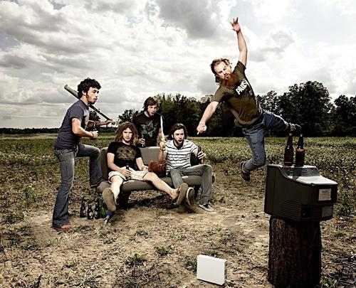
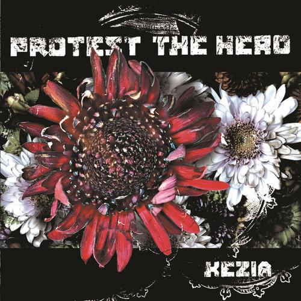
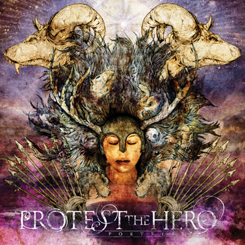
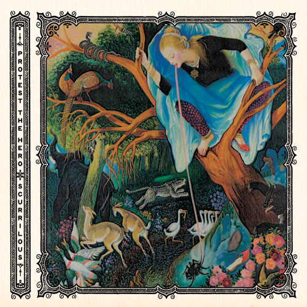

Band Bio
 Protest The Hero’s well-deserved title as one of the most forward-thinking bands in the metal world today is showcased on their latest album, Scurrilous. Comprised of vocalist/lyricist Rody Walker, guitarist Tim Millar, guitarist/pianist Luke Hoskin, bassist/lyricist Arif Mirabdolbaghi, and drummer Moe Carlson, the quintet formed nearly a decade ago in their hometown of Whitby, Ontario. With friendships dating back as early as elementary school, it’s safe to say the guys of Protest The Hero have grown together both musically and personally, and such progression is evident throughout Scurrilous. “I wouldn’t really call us a family,” says Rody, “but we’re definitely more than friends. I’ve slept in a bed next to Luke more times than I’ve slept next to my own girlfriend.” Named after a painting created by Arif’s grandfather (which is also the album’s cover image), Scurrilous is the band’s third full-length album and boasts ten tracks of soaring guitar riffs, bone-chilling operatic vocals, and some of the most personal lyrics Protest The Hero has written to date. PTH established when they were just fourteen years old and in five short years released their 2005 debut full-length, Kezia, on Vagrant Records. Audiences and critics alike praised the band for the obvious technical skills displayed on the album, setting Protest The Hero apart from other acts in the genre. Three years and endless-hours-spent-in-a-van later, and the guys of Protest were ready to release their sophomore effort on Vagrant entitled Fortress. Again, wowed by the sheer musical genius Protest The Hero demonstrated, fans were floored and critics were singing the band’s praises, with Metromix claiming “PTH guitarists Tim Millar and Luke Hoskin deserve an entire Guitar Hero devoted to them,” and Decibel hailing PTH as “phenomenally talented, intense, and heady.” Fast-forward to 2011 (the year the band-mates all turn twenty-five) and you find Protest The Hero releasing a third album that serves as an embodiment of “growing up.” Scurrilous is an album unlike any other in Protest The Hero’s catalog. For the first time in the band’s career, singer Rody wrote the majority of the album’s lyrics. “ I had a lot going on in my life and I used (Scurrilous) as my outlet,” Rody notes. “The songs are really just a loose string of my thoughts and touch upon relationships in my life, both good and bad.” Without any conceptual restraints Rody was allotted complete artistic freedom during the writing process resulting in honest and intimate lyrics listeners can make their own. But PTH fans ought not to fret as Scurrilous’ lyrics by no means overshadow the riff-oriented music Protest The Hero is known for, but instead create a cohesive shred-fest you can relate to while rocking out.
Protest The Hero's Studio Recorded Albums
- 
- 
- 

- Kezia (August 30, 2005)
- Fortress (January 29, 2008)
- Scurrilous (March 22, 2011)
- Volition (October 29, 2013)